吃蟹不单是指吃大闸蟹，普通的螃蟹也很滋补。中秋时，把螃蟹和冬瓜配在一起煲一道秋季养生汤，可以滋阴清热解毒，还能预防皮肤长痘疮。
主料：小螃蟹250克、冬瓜250克、生地30～60克。
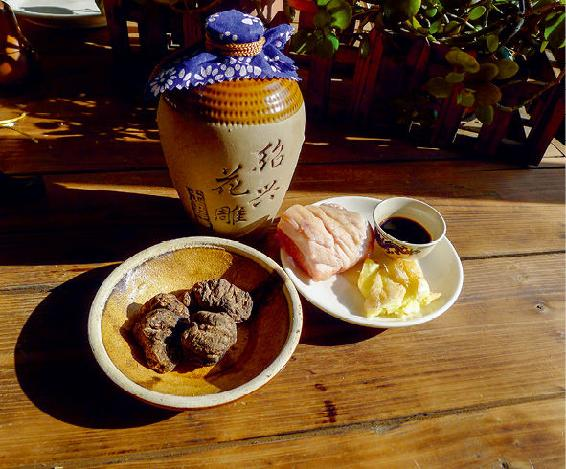
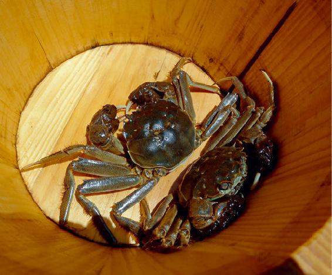
配料：生姜、黄酒、肥肉1小块。
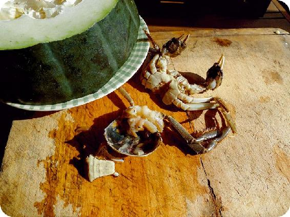
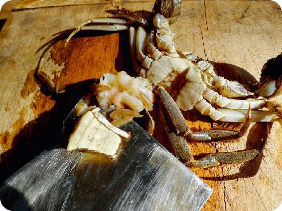
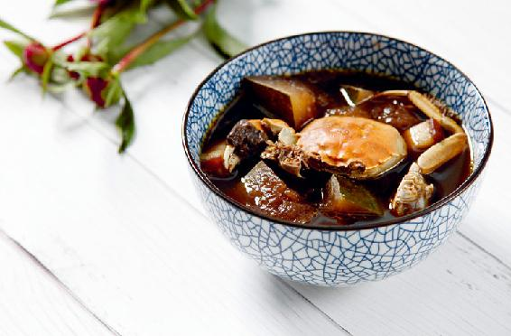
做法：
a 螃蟹的处理：换几次水，让螃蟹吐净脏污，用醋水泡30分钟。
b 用加醋的热水把螃蟹洗净，去掉腮和内脏。
c 生地用清水泡1小时，下锅和肥肉一起熬30分钟。
d 放入螃蟹、冬瓜、生姜、黄酒煮30分钟。
允斌叮嘱：感冒、咳嗽痰多、便溏腹泻勿食。
立秋时必须得补一补，冬天才好过，不容易怕冷，也不容易生病。体虚瘦弱的人，可以吃十全大补酒糟鸡。其他的人呢，也最好吃些补气的食物来帮帮辛苦一夏的身体。
立秋之日还在三伏天之中，以前推荐大家在三伏天补气用的黄芪粥，这时一定要喝。
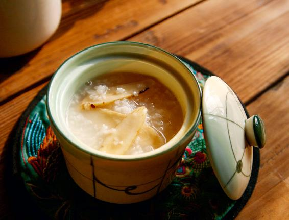
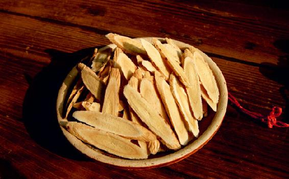
原料：2人份1天用量，黄芪（柳叶片）60克、大米100克。
做法：黄芪用清水浸泡一晚，加100克大米一起煮成稀粥。
允斌叮嘱：感冒、咳嗽痰多不可喝黄芪粥。黄芪药渣不用吃。
出伏送暑补肾汤是纯素的，补养效果却很好，可以清热利湿，补益肾气，调理下焦湿热、小便异常、白带异常，还能补肾健脾。
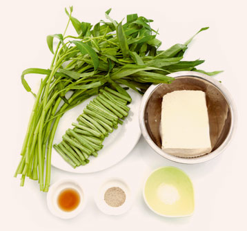
原料：
a 豆腐1块、豇豆角1把、空心菜1把。
b 胡椒粉、植物油、盐。
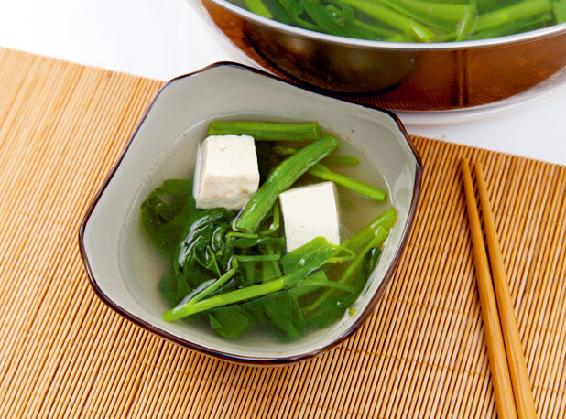
做法：
a 豆腐切成小方块，豇豆角切成约6厘米长的段，空心菜取嫩茎叶。
b 锅内放清水，水开后放少许盐、植物油，放入豆腐和豇豆角煮熟。
c 加入空心菜，不要盖锅盖，待再次沸腾后，撒胡椒粉起锅。
秋天的应季水果——梨是专门润肺的。但梨偏寒性，怎么吃梨才能让老年人以及体弱、体寒的人达到润肺而又不寒凉的效果呢？可以吃红酒炖梨。
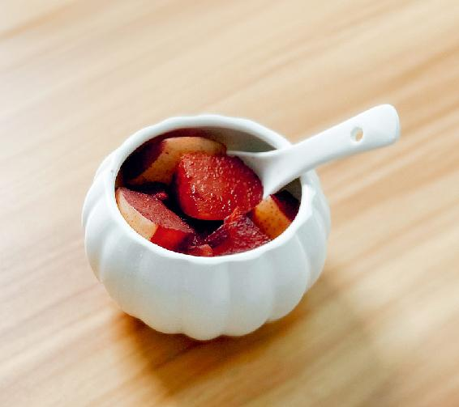
原料：梨、红酒、丁香粉（没有可不放）。
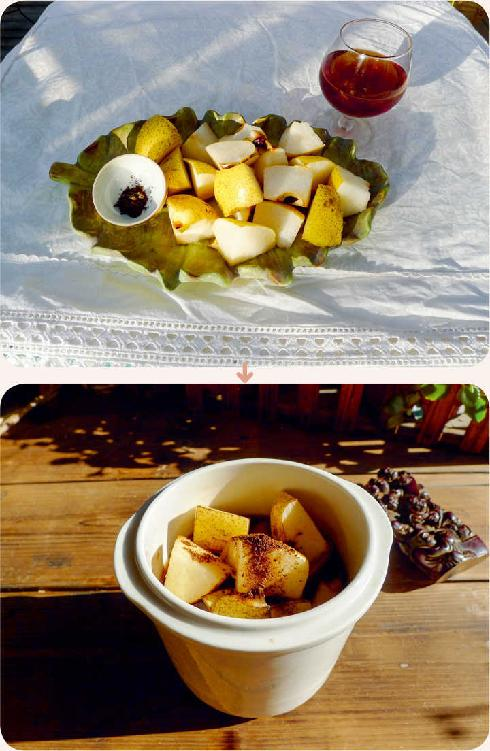
做法：
a 梨用面粉水泡15分钟后洗净，连皮带核切成小块。
b 锅内放入梨块，洒点丁香粉，倒入少量红酒，淹没梨块一半的位置。
c 不要盖锅盖， 用小火炖煮。煮到梨块变红，锅内还剩一点点汁的时候，关火起锅。
允斌叮嘱：
a 有三种情况不宜吃：痰多不要吃；风寒感冒不要吃；腹泻不要吃。
b 不要用生铁锅。
c 用普通红酒即可。
秋天人身上的三燥——肺燥、肠燥、皮肤燥，都要靠滋阴来解决。要想安全平和地滋养五脏之阴，银耳是不二之选。
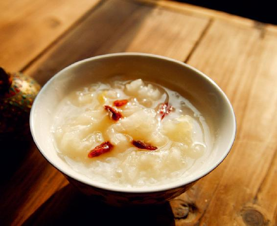
吃法：
a 首先把银耳洗净，撕成小朵，越碎越好。
b 把银耳放到暖水瓶或保温瓶里，冲入一满壶沸水。焖一晚上。
c 早起把它倒到锅里，再煮十几分钟即可。
允斌叮嘱：
a 吃银耳时，不要同时服用黄芪、人参。
b 风寒感冒、咳嗽痰多时不要用银耳。
c 老爱腹泻的人暂时不要用银耳。
有的人吃东西后肚子胀，有的人一紧张就胃痛，有的人口气很重。这时，在点心里放点桂花，能帮助消化甜腻之食，又能消除口气，使你吐气芬芳。
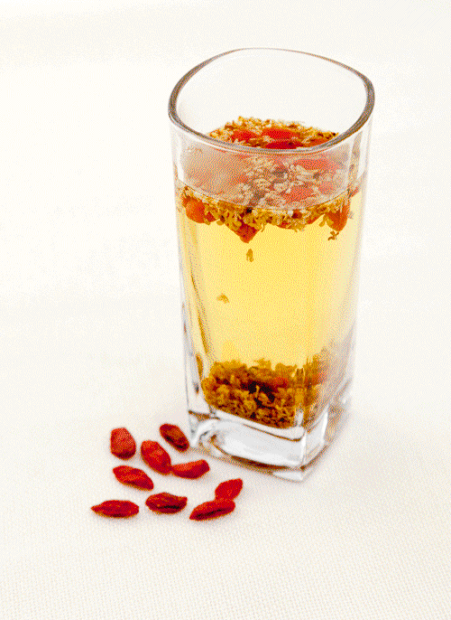
原料：干桂花3克（新鲜的可以5克左右）、枸杞适量。
用法：沸水冲泡代茶饮。
允斌叮嘱：
a 刚摘的桂花要放1～2小时，等腻虫爬出后，用淡盐水泡洗。
b 腹泻者勿饮。
熬夜极伤肝血，肝血不足，夜里更难入睡。一旦熬夜伤了肝血，第二天要赶紧从饮食上弥补，墨鱼汤就是养肝血的宝贝。
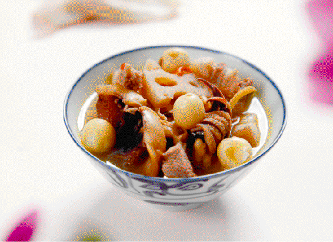
原料：墨鱼干1～2只、肥猪肉1小块、莲藕250克、莲子20粒、枸杞20粒、陈皮半个（或10～20克）、生姜（带皮）3片。
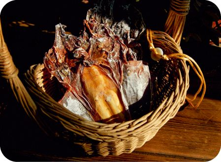
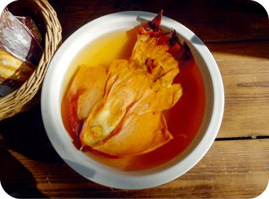
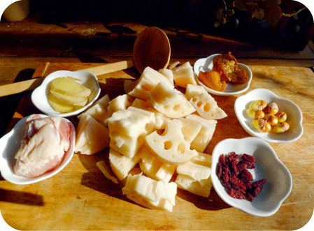
做法：
a 用冷水泡发墨鱼干和莲子。墨鱼干不要拆骨。莲藕切块。
b 把全部原料冷水下锅，大火烧开后转小火炖40～60分钟。
c 加少许盐，关火。起锅后将墨鱼骨取出。
允斌叮嘱：皮肤过敏、湿疹及痛风者不要多吃墨鱼。墨鱼要见荤油才不会苦。